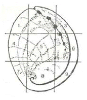

수산양식기사 (2018-08-19 기출문제)
1과목: 어류양식학
1. 넙치 종묘생산 시 수온을 18℃로 한다면 변태가 끝나는 시기는 대략 부화 후 며칠 정도인가?
- 7일
- 10일
- 20일
- 35일
(정답률: 60%)

2. 조피볼락 자어 사육 시 수심을 1 ~ 1.5m로 관리할 때 가장 적합한 수조의 표층 조도는?
- 50lx 이하
- 50 ~ 100 lx
- 100 ~ 200lx
- 200 ~ 500lx
(정답률: 82%)
3. 동양계 잉어양식에서 대형 종묘생산에 대한 설명이 옳은 것은?
- 3cm 정도 되는 소형 종묘로부터 체장 5 ~ 7cm 전후, 체중 20g의 큰 종묘를 생산하는 과정이다.
- 3cm 정도 되는 소형 종묘로부터 체장 15 ~ 20cm 전후, 체중 50 ~ 100g의 큰 종묘를 생산하는 과정이다.
- 3cm 정도 되는 소형 종묘로부터 체장 20 ~ 30cm 전후, 체중 100 ~ 200g의 큰 종묘를 생산하는 과정이다.
- 3cm 정도 되는 소형 종묘로부터 체장 30cm 전후, 체중 300g의 큰 종묘를 생산하는 과정이다.
(정답률: 78%)
4. 아르테미아 알을 부화하는데 알맞은 수온과 염분은?
- 수온 28℃ 전후, 염분농도 20 ~ 25‰
- 수온 28℃ 전후, 염분농도 25 ~ 30‰
- 수온 25℃ 전후, 염분농도 20 ~ 25‰
- 수온 25℃ 전후, 염분농도 25 ~ 30‰
(정답률: 74%)
5. 유전자이식 기술 적용 시 포유류에 비해 어류의 장점이 아닌 것은?
- 체외 수정
- 많은 수의 배우자
- 긴 세대 기간
- 동형 접합성 클론 확립
(정답률: 92%)
6. 다음 중 전세계적으로 가장 광범위한 지역에서 양식되는 어류는?(단, 생산량 기준은 아님)
- 방어
- 복어
- 숭어
- 참돔
(정답률: 91%)
7. 양어사료에 섞인 지방의 산화방지제로 주로 사용하는 것은?
- 비타민 E
- 비타민 B
- 비타민 C
- 비타민 K
(정답률: 87%)
8. 출하 전 참돔의 체색을 유지하기 위하여 배합사료에 혼합하여 공급하는 것은?
- 새우류
- 전갱이
- 까나리
- 멸치
(정답률: 92%)
9. 은어 양식 시 사료를 공급할 때 유의해야 할 점으로 틀린 것은?
- 배합사료를 먹일 때에는 5% 정도의 식용유를 첨가한다.
- 수온이 26℃ 이상으로 올라가면 낮에만 사료를 준다.
- 자동공급기를 사용할 때에도 항상 공급량의 과부족을 관찰하면서 조절한다.
- 여름철에는 사료가 쉽게 변질되므로 한꺼번에 많이 구입하지 말아야 한다.
(정답률: 89%)
10. 하루 중 잉어의 산란이 주로 이루어지는 때는?
- 자정을 전후해서
- 새벽부터 오전 중에
- 오후부터 일몰 전에
- 일몰 후 초저녁에
(정답률: 81%)
11. 어류의 성장에 따른 사료 공급 기준으로 가장 적합한 것은?(단, 비율은 체중에 대한 사료공급량)
- 어체가 클수록 비율을 높인다.
- 대소에 관계없이 일정한 비율로 준다.
- 어릴 때는 비율을 높게 하고 성장할수록 낮춘다.
- 서식 수온 범위 내 수온이 높을수록 비율이 낮아진다.
(정답률: 91%)
12. 잉어 500kg을 초기 입식하여 60일 후 750kg을 수확하였다. 이 때 사료의 공급량이 500kg(건중량 기준)일 때 사료계수와 사료효율은? (단, 폐사된 개체와 사료의 소실은 없음)
- 1.0, 100%
- 1.5, 75%
- 2.0, 50%
- 2.5, 25%
(정답률: 91%)
13. 미꾸리 인공채란 시 암컷의 선택 조건으로 틀린 것은?
- 복부가 붉은색을 띄고 투명감을 주는 것
- 복부가 매끄럽고 백색 만점이 있는 것
- 배가 부르고 약간 밑으로 처진 것
- 복부가 부드럽고 항문 부분이 붉은 것
(정답률: 78%)
14. 다음 중 냉수성 어류인 무지개 송어의 양식에서 가장 성장이 빠른 수온 범위는?
- 4 ~ 7℃
- 7 ~1 0℃
- 10 ~ 15℃
- 15 ~ 20℃
(정답률: 54%)
15. 양식의 잡종 유도에 관련된 설명으로 틀린 것은?
- 초기 생존율이 낮다.
- 일반적으로 성장률이 높다.
- 생식력이 크다.
- 이론적으로 1:1이나 실제로는 성비가 일정하지 않다.
(정답률: 67%)
16. 방어 양식용 종묘에 대한 설명으로 틀린 것은?
- 종묘는 클수록 먹이 길들이기가 좋다.
- 겉보기에 둥글둥글하게 살이 쪄 있는 것이 좋다.
- 사육가두리에서 다른 개체와 떼를 지어서 유영하는 것이 좋다.
- 어체의 크기가 일정한 것이 좋다.
(정답률: 89%)
17. 일반적인 넙치 종묘생산에서 자어의 최초 먹이생물로 자주 이용되는 것은?
- 코페포다
- 로티퍼
- 아르테미아
- 섬모충
(정답률: 86%)
18. 실뱀장어 취급법으로 틀린 것은?
- 체포된 실뱀장어는 즉시 25 ~ 28℃에 수용하여 최적 성장이 되도록 한다.
- 체포된 실뱀장어는 염분 0.7% 정도의 사육수에 넣어 삼투조절을 시킨다.
- 채포된 실뱀장어는 m2ekd 200 ~ 300g 정도로 방양한다.
- 채포된 실뱀장어는 안정시킨 후 약욕시켜 사육지에 수용한다.
(정답률: 63%)
19. 활어 운반 시 주로 냉각 마취를 이용하는 어류는?
- 뱀장어
- 잉어
- 송어
- 연어
(정답률: 90%)
20. 무지개 송어의 해수 사육에 대한 설명으로 옳은 것은?
- 치어기 무지개송어는 해수에서 잘 큰다.
- vibrio균에 의한 피해를 입는다.
- 성장이 늦어진다.
- 성숙 현상이 일어나지 않는다.
(정답률: 73%)
2과목: 무척추동물양식학
21. 진주조개의 종묘 생산에 관한 설명으로 옳은 것은?
- 족사의 부착력이 약해서 채묘하기가 비교적 어렵다.
- 부유 유생이 많은 시기는 8월 하순 ~ 9월 상순 사이이다.
- 치패의 각장이 약 20mm 정도인 때가 채룡으로 옮기는데 가장 적합하다.
- 대체로 각장 30 mm 이상 성장하여야만 종묘로서 사용할 수 있다.
(정답률: 59%)
22. 2cm 크기의 전복 종패를 방양할 때 생존율을 높이기 위해서 반드시 필요한 사항은?
- 둥근 형태의 전복을 택할 것
- 새로윤 방양시설(전복초)을 할 것
- 저위도 지방에 방류할 것
- 홍조류를 일정한 기간 동안 먹일 것
(정답률: 75%)
23. 피조개 부유유생에 관한 설명으로 틀린 것은?
- 남해안의 경우 주로 8월 중순부터 9월 준순 사이에 많이 나타난다.
- 일반적으로 중층보다 깊은 수심에 많이 분포한다.
- 부유기간은 수온이 25℃ 내외의 경우 약 1주일 정도이다.
- 와류현상이 있는 곳에 부유유생이 많다.
(정답률: 40%)
24. 무척추동물 부유 유생 사육 시 먹이생물이 갖추어야 할 일반적인 조건이 아닌 것은?
- 적당한 크기와 모양
- 부착성
- 영양성
- 대량배양의 용이성
(정답률: 81%)
25. 바지락 성패의 서식적지로서 적합하지 않은 곳은?
- 육수의 영향을 받는 파도가 조용한 내만
- 해수와 유기물의 원활한 순환을 위해 지반변동이 활발한 곳
- 해수의 유통이 좋고 환원층의 발달이 적은 곳
- 썰물 시 2 ~ 3시간 노출되는 곳부터 수심 3 ~ 4m 사이로 먹이생물이 많은 곳
(정답률: 64%)
26. 참담치의 채묘시설로 가장 적합한 것은?
- 침설식
- 조위망식
- 완류식
- 말목수하식
(정답률: 56%)
27. 키조개에서 이용가치가 가장 큰 부위는?
- 전폐각근
- 후폐각근
- 생식소
- 패각
(정답률: 78%)
28. 대합 양식장의 조건으로 적합하지 않은 것은?
- 지반이 평탄하고 변동이 없는 곳
- 담수의 영향을 받지 않는 곳
- 수온 12 ~ 28℃ 범위를 유지하는 곳
- 조류의 소통이 좋고 대조 시 5시간 이하로 노출되는 곳으로부터 수심 4 ~ 6m 되는 곳
(정답률: 52%)
29. 부착동물이나 비부착성 저서 조개류의 종묘방양량과 가장 밀접한 관계가 있는 환경요인은?
- 먹이 발생량
- 수온
- 용존산소량
- 해수의 유통
(정답률: 60%)
30. 전복 종묘가 상처를 입었을 때 가장 치명적인 손상 부위는?

- 1
- 3
- 4
- 5
(정답률: 82%)
31. 부유유생기에 먹이를 반드시 공급해야 하는 양식생물은?
- 소라
- 전복
- 수랑
- 성게
(정답률: 70%)
32. 수하식 굴 양성장의 노화현상에 대한 대책으로 볼 수 없는 것은?
- 밀식방지
- 수하연 수하 깊이 조절
- 양성장의 휴식년제 도임
- 안정수면적의 충분한 확보
(정답률: 79%)
33. 해삼의 서식장에 관한 설명으로 틀린 것은?
- 부유생활 후 저서생활로 들어가면 포복활동에 의한 이동을 한다.
- 내만성 해삼은 연안의 조간대로부터 수심 20m 정도 사이에서 서식한다.
- 내만성 해삼은 저질이 순 개흙질인 곳에서 서식한다.
- 수심이 얕은 곳에는 작은 해삼이 살고 수심이 깊어지면 해삼의 크기도 점차 커진다.
(정답률: 68%)
34. 새우류 양성 시 저질이 환원되는 것을 방지할 수 있는 가장 좋은 양성법은?
- 축제식
- 수조식
- 그물가두리식
- 순환여과식
(정답률: 67%)
35. 우리나라 새우양식에 대한 내용으로 적합하지 않은 것은?
- 과거에는 보리새우나 대하를 주로 양식하였으나 바이러스에 의한 폐사로 인해 흰다리새우로 주 양식대상종이 바뀌었다.
- 새우양식은 축제식, 육상수조식을 주로 사용하며, 이 중 축제식 양성을 통한 생산량이 더 많다.
- 최근 사육기술의 개발로 해산종인 큰징거미새우가 도입되어 양식되고 있다.
- 최근의 새우양식에서 친환경 바이오플락 기술을 적용한 양식이 증가하고 있다.
(정답률: 71%)
36. 우리나라 무척추동물 양식현장에서 먹이생물로 배양, 활용 되고 있지 않는 종류는?
- Chaetoceros gracilis
- Skeletonema costatum
- Isochrysis galbana
- Gonyaulax catenella
(정답률: 69%)
37. 참담치의 산란임계온도는?
- 6℃
- 8℃
- 10℃
- 14℃
(정답률: 46%)
38. 보리새우의 습성으로 틀린 것은?
- 군집성
- 냉수성
- 잠복습성
- 추류성
(정답률: 71%)
39. 참가리비 채묘치패의 관리 방법으로 틀린 것은?
- 치패는 각장이 7 ~ 8mm로 되면 부착기에서 떼어 채롱에 옮겨 관리한다.
- 수하 양성용 치패는 크기가 클수록 좋다.
- 치패 관리 시설은 파도의 영향을 적게 받아야 한다.
- 부착기에서 떨어지는 치패를 수용 관리하는 중간양성 과정은 필요 없다.
(정답률: 80%)
40. 참굴의 후괴 산란 적정수온은?
- 13 ~ 16℃
- 17 ~ 20℃
- 22 ~ 25℃
- 26 ~ 28℃
(정답률: 47%)
3과목: 해조류양식학
41. 청각의 양식방법에 대한 설명으로 옳은 것은?
- 타이드 풀(Tide pool) 같은 곳에 청각을 절단해서 살포한다.
- 미역연승식과 같은 요령으로 시설한다.
- 패각에다 접합자를 채묘해서 살포한다.
- 인공반석을 이용한 양성을 한다.
(정답률: 52%)
42. 점심대에 투석으로 증식시킬 수 있는 종류로 가장 적합한 것은?
- 풀가사리
- 돌김
- 우뭇가사리
- 꼬시래기
(정답률: 56%)
43. 다음 중 일반적인 양식 환경에서 김냉장발을 출고 후 어장에 설치하는 시간으로 가장 적절한 것은?
- 1 시간 이내
- 3 ~ 4 시간 이내
- 8 ~ 12 시간 이내
- 24시간 이내
(정답률: 69%)
44. 미역 종묘 배양 시 초기 관리사항으로 옳은 것은?
- 수온은 23 ~ 25℃를 유지한다.
- 광선은 2000 lx 이하로 한다.
- 암, 수 배우체는 각각 3개와 10개 세포이하로 생장시킨다.
- 물 환수는 1일 1회 실시한다.
(정답률: 59%)
45. 김양식장에서 양식종의 자리바꿈이 일어나는 주원인은?
- 내병성(耐病性)의 차이
- 영양번식력의 차이
- 채묘시기의 차이
- 노출의 차이
(정답률: 84%)
46. 미역, 다시마 양식에서 어미줄의 수위조절과 관계가 가장 깊은 것은?
- 생장
- 시설물 유지
- 해적생물 제거
- 품질
(정답률: 62%)
47. 지충이와 톳의 군락이 경합을 하게 되는 주된 원인으로 틀린 것은?
- 유생의 출현시기가 유사하다.
- 모두 포복지를 이용하여 무성생식이 가능하다.
- 지충이의 부착층이 넓다.
- 지충이와 톳은 거의 동일한 수위에 군락을 이룬다.
(정답률: 57%)
48. 냉동고에 넣을 김 냉동 종망(씨발)의 적정 함수율은?
- 12% 이하
- 20 ~ 40%
- 50 ~ 60%
- 90% 이상
(정답률: 77%)
49. 김양식과 관련한 설명 중 틀린 것은?
- 소조 때 조류 소통이 나쁘면 김이 생리적으로 약해지기 쉽다.
- 적정 범위 내에서 수온이 높아지면 생리활동이 왕성해지고 영양염을 많이 소비한다.
- 겨울에 따뜻한 날씨가 노래되면 해수의 대류가 잘 이루어져 생장에 좋다.
- 김발의 밀식은 물의 흐름을 방해하여 생리적인 장애가 발생하기 쉽다.
(정답률: 70%)
50. 미역양식시설 중 조립연승식의 특징을 가장 잘 나타낸 것은?
- 뗏목식과 연승식을 개량한 것이다.
- 말목식과 연승식을 접목한 것이다.
- 채롱식과 뗏목식을 접목한 것이다.
- 김 그물발(망홍)을 개량한 것이다.
(정답률: 75%)
51. 현재까지 우리나라에서 서식이 확인되지 않고 있는 다시마 종류는?
- 개다시마
- 다시마
- 애기다시마
- 오호츠크다시마
(정답률: 79%)
52. 김의 엽록체에 포함되어 있지 않은 것은?
- Chlorophyll a
- Chlorophyll b
- β-carotene
- c-phycoerthrin
(정답률: 62%)
53. 양식 관점에서 큰참김의 단점은?
- 엽체 탈락이 쉽다.
- 병해에 약하.
- 색택이 나쁘다.
- 수확량이 적다.
(정답률: 70%)
54. 다시마 양식 시설 장소로 적합하지 않은 것은?
- 조류가 다소 빠른 곳
- 저질은 자갈, 모래, 사니질 지역
- 수심 6 ~ 10m 정도인 곳
- 담수 유입이 잘되는 지역
(정답률: 68%)
55. 김발을 노출시키지 않았을 때 나타나는 현상은?
- 색택이 좋다.
- 생장이 좋다.
- 염성(捻性)이 강해진다.
- 2차아의 착생율이 높아진다.
(정답률: 52%)
56. 김의 인공채묘 방법 중 가장 계획성 있고 집약적으로 채묘할 수 있는 채묘법은?
- 무기질사상체에 의한 인공채묘
- 봉투식 야외인공채묘
- 야외인공채묘
- 육상탱크채묘
(정답률: 67%)
57. 다시마 양성관리 시 4~5월 경 어미줄(친승) 1m 당 남겨야 할 적절한 개체수는?
- 70 ~ 100 개체
- 50 ~ 70 개체
- 25 ~ 50 개체
- 100 개체 이상
(정답률: 68%)
58. 생식세포를 이용하여 증식을 하며 3년이 경과한 뒤에야 그 효과가 크게 나타나는 해조류는?
- 돌김
- 톳
- 자연산 미역
- 꼬시래기
(정답률: 70%)
59. 참김(Porphyra tenera)과 둥근김(P. kuniedai)의 분류상 가장 주된 차이점은?
- 자웅성
- 생식세포의 분할방식
- 생활사
- 엽연(葉緣)의 톱니 유무
(정답률: 50%)
60. 양식장에서 김이 건전하게 성육하는 데 필요한 1 일 노출시간은?
- 8 ~ 10 시간
- 6 ~ 8 시간
- 4 ~ 6 시간
- 2 ~ 4 시간
(정답률: 53%)
4과목: 양식장환경
61. 김양식장에 영향을 미치는 환경에 관한 설명으로 틀린 것은?
- 강우나 강설은 산소와 탄산가스를 공급하는 중요 요인이다.
- 인(P)은 김의 초기 성장에 매우 중요한 역할을 한다.
- 아황산가스를 함유한 안개는 김의 성장을 촉진시킨다.
- 질소(N)는 김양식장에서 가장 중요한 영양염류이다.
(정답률: 77%)
62. 생물학적 여과에 이용되는 질산화 세균의 특징으로 옳은 것은?
- 자가영양세균
- 타가영양세균
- 혐기성 세균
- 고온성 세균
(정답률: 62%)
63. 다음 중 양식시설의 수질오염 저감 방안으로 가장 거리가 먼 것은?
- 육성어용 저오염 사료의 개발·사용이 필요하다.
- 시설 내에 사육어류의 건강 상태가 양호하도록 관리해야 한다.
- 사료 허실과 어장 주변의 부영양화를 방지해야 한다.
- 부유물질 제거를 위하여 화학적 응집침전지를 설치해야 한다.
(정답률: 65%)
64. 가두리 양식장의 노화 방지책으로 가장 우선적인 것은?
- 먹이 과잉 공급 방지
- 양식생물 수용량 조절
- 저질 경운
- 휴식년제 도입
(정답률: 67%)
65. 수중의 영양염류와 관련이 가장 없는 내용은?
- 일반적으로 동물플랑크톤의 영양분으로 이용된다.
- 수생식물에 의해 흡수 이용된다.
- 너무 많으면 수질을 악화시킬 수 있다.
- 수중 유기물질의 분해로 공급된다.
(정답률: 63%)
66. 다음 중 수질을 가장 많이 오염시키는 경우는?
- 100g 짜리 10마리를 수용했을 때
- 50g 짜리 20마리를 수용했을 때
- 10g 짜리 100마리를 수용했을 때
- 5g 짜리 200마리를 수용했을 때
(정답률: 78%)
67. 노지 양어지에서 플랑크톤의 발생정도를 측정하는 데 많이 이용되는 손쉬운 방법은?
- 탁도 측정
- DO측정
- 투명도 측정
- 클로로필 측정
(정답률: 57%)
68. 보상 깊이는 보통 투명도의 몇 배 정도인가?
- 투명도와 같다.
- 2배 정도이다.
- 4배 정도이다.
- 6배 정도이다.
(정답률: 64%)
69. 자외선과 오존을 이용한 사육수 소독에 대한 설명으로 틀린 것은?
- 오존을 쬐면 사육수내 미생물 세포의 DNA를 불활성화시켜 생물을 죽인다.
- 물속에 현탁되어 있는 용존물질의 양에 따라 살균효과가 달라진다.
- 오전처리를 한 물은 반드시 탈오존처리를 하여 사육조로 보내야 한다.
- 자외선 소독은 유생사육 및 먹이생물의 배양 시 많이 사용된다.
(정답률: 60%)
70. 수중의 오염지표 중 화학적 지표가 아닌 것은?
- BOD
- SS
- COD
- DO
(정답률: 69%)
71. 일반적으로 담수 정수식 양어지에서 수질관리 사항으로 크게 중요하지 않는 것은?
- 수소이온농도 측정
- 비중 측정
- 암모니아 농도 측정
- 용존산소량 측정
(정답률: 73%)
72. 다음 중 기본형 에어레이션 장치가 아닌 것은?
- 낙차 에어레이션 장치
- 표면 에어레이션 장치
- 벤투리관 에어레이션 장치
- 확산 에어레이션 장치
(정답률: 84%)
73. 순환여과식에서 사육수의 NH3를 측정하는 이유로 가장 적합한 것은?
- NH3가 인체에 매우 해로우므로
- NH3의 오염은 알칼리성을 의미하므로
- NH3는 분해가 완료된 안정한 화합물이므로
- NH3는 오염을 추정하는 중요한 지표이므로
(정답률: 77%)
74. 어류 양식장에 사료를 과도하게 공급하였을 때 나타나는 양어장의 수질 변동에 대한 설명으로 틀린 것은?
- 용존산소 값이 낮아진다.
- BOD 값이 높아진다.
- COD 값이 낮아진다.
- 수중 부유물질 농도가 높아진다.
(정답률: 79%)
75. 다음 중 원형지의 주수구 설치로 가장 좋은 것은?
- 탱크의 중앙에 물이 낙하하도록 설치한다.
- 탱크의 가장자리와 같은(평행한) 방향으로 물이 주입되도록 설치한다.
- 미관상 보기 좋게 수면 아래로 주입수 파이프를 설치한다.
- 가장자리 가까이에서 작하시키도록 설치한다.
(정답률: 72%)
76. 순환 여과식 양식장에서 고형 오물을 제거한느 방식에 해당하는 것은?
- 살수 여과방식
- 스크린 여과방식
- 생물 여과방식
- 활성 오니 여과방식
(정답률: 59%)
77. 질산화 과정 중 암모니아를 산화시키는 세균은?
- Nitrosomona sp.
- Nitrobacter sp.
- Pseudimonas sp.
- Bacillus sp.
(정답률: 77%)
78. 냉수성 어류의 성장이 잘 되는 수온은?
- 5℃ 내외
- 10℃ 내외
- 15℃ 내외
- 25℃ 내외
(정답률: 63%)
79. 어류가 배설하는 암모니아는 주로 어떻게 변하여 어류에게 거의 무해하게 되는가?
- 암모니아→초산염→질산염
- 암모니아→질산염→초산염
- 암모니아→아질산염→질산염
- 암모니아→질산염→아질산염
(정답률: 72%)
80. 물의 경도에 관한 설명으로 틀린 것은?
- 수중의 Ca2+, Mg2+ 합계량을 이에 대응하는 탄산칼슘의 ppm으로 표시한다.
- EDTA로 적정해서 구할 수 있다.
- 물을 끓여주면 탄산염으로 침전되어 HCO3-이온을 모두 제거할 수 있다.
- 경도가 높은 물은 보일러 용수로 사용하기 적합하지 않다.
(정답률: 59%)
5과목: 수산질병학
81. 여름철 수온이 20 ~ 25℃일 때 강우량이 많아서 염분농도가 낮아질 때 방어에 주로 유행하는 질병은?
- 에드워드병
- 림포시스티스병
- 슈도모나스병
- 류결절증
(정답률: 68%)
82. 어류의 조충병을 일으키는 원인 기생충이 아닌 것은?
- Bothriocephalus opsariichthydis
- Proteocephalus plecoglossi
- Callotetrahynchus niponica
- Philometyra lateolabracis
(정답률: 57%)
83. 수중 내 질소가스가 약 몇 % 이상이 될 때 가스병에 걸릴 위험이 높은가?
- 60%
- 80%
- 100%
- 120%
(정답률: 78%)
84. 어류의 림포시스티스병의 병리조직학적 특징이 아닌 것은?
- 감염세포의 비대
- 불규칙한 봉입체 존재
- 신경세포의 공포화
- 세포질의 호염기성
(정답률: 56%)
85. 방어나 넙치에 있어서 Streptococcus sp.가 감염되어 질병이 발병할 때 특징적인 증상은?
- 꼬리 및 가슴지느러미의 부식
- 아가미판의 곤봉화
- 안구돌출과 안구 가장자리의 출혈
- 피부에 궤양 병소 형성
(정답률: 61%)
86. 뱀장어 적점병 병원체인 Psudomonas anguilliseptica의 형태와 배양 성상에 대한 설명이 틀린 것은?
- 배양온도 25℃ 이상에서는 운동성이 약해진다.
- 그람 양성균으로 크기는 0.4 × 2 ㎛ 정도이며, 1개의 편모를 갖는다.
- 식염 0.5 ~ 1.0%를 함유한 배지에서 발육이 잘된다.
- 은어, 미꾸라지, 길은 본 균에 대해 비교적 높은 감수성을 나타낸다.
(정답률: 62%)
87. 양식장에서는 유결절증(Pseudotuberculosis)이 주로 발생(유행)하는 수온은?
- 15 ~ 18℃
- 20 ~ 25℃
- 26 ~ 30℃
- 30 ~ 33℃
(정답률: 55%)
88. 양어장의 금붕에 비늘이 서고 안구가 돌출되었으며 복강에 물 같은 액체가 고여 팽만되었다. 다음 중 어떤 균과 가장 관계가 있는가?
- Aeromonas sp.
- Pseudomonas sp.
- Edwardsiella sp.
- Vibrio sp.
(정답률: 59%)
89. 백점충(Ichthyophthirius multifiliis)의 생리, 형태에 관한 설명으로 틀린 것은?
- 충체는 난원형이며, 대핵은 말굽형으로 영양을 관장한다.
- 피낭체에서 분열된 섬모자충은 서양배 모양이다.
- 번식 시 생산되는 자충의 수와 크기는 수온과 밀접한 관계가 있고, 고온일수록 크기는 커지지만 수는 적어진다.
- 번식 수온은 6 ~ 25℃이다.
(정답률: 64%)
90. 김사상체에 병해 징조가 나타났을 때 영양제 첨가로 쉽게 치유되는 병은?
- 적변병
- 닭살
- 녹변병
- 황반병
(정답률: 68%)
91. 외부기생성 물곰팡이에 의한 어류 질병 발생과 관련된 내용으로 적합한 것은?
- 상피세포에 상처가 생긴 곳에 발생한다.
- 위장에 염증이 생겨 허약할 때 발생한다.
- 수온이 높은 양어장에 발생률이 높다.
- 외상이 없는 건강한 어류에도 곰팡이가 접촉하면 발생한다.
(정답률: 79%)
92. 연어, 송어류의 등여윔병을 치료하기 위해서 보충해야 하는 영양소는?
- Vitamin A
- Vitamin B1
- 글루테닌산
- Vitamin E
(정답률: 58%)
93. 채널메기 바이러스병의 유행 시기는?
- 봄
- 여름
- 가을
- 겨울
(정답률: 57%)
94. 뱀장어의 근육에 Heterosporis sp.가 기생하면 어떤 증상이 나타나는가?
- 등이 굽어진다.
- 어체가 울퉁불퉁해진다.
- 어체가 여윈다.
- 어체가 회백색으로 변한다.
(정답률: 70%)
95. 뱀장어의 체표 점액 내에 포함되어 있는 물질로서 세균에 대한 용균작용, 응집작용, 살균작용에 관여하여 병원균의 체내 침입을 저지시키는 것은?
- 글루테닌
- 메티오닌
- 시아릭산
- 시스틴
(정답률: 59%)
96. 전염성췌장괴사병(IPN)과 전염성 조혈기괴사병(IHN)에서 공통적으로 보이는 증상이 아닌 것은?
- 송어류에서 발병한다.
- 치어의 복부에 V자 출혈이 나타난다.
- 병어는 체색이 검어지며 안구가 돌출된다.
- 발병 말기에는 발광하며 복부에 긴 분변을 달고 다닌다.
(정답률: 63%)
97. 다음 중 잉어의 피부에 궤양이 형성되는 주된 이유로 가장 적절한 것은?
- Gyrodactylus병 때문이다.
- Aeromonas병 때문이다.
- IPN병 때문이다.
- Epistylis병 때문이다.
(정답률: 60%)
98. 다시마 양식의 해적생물로 가장 큰 피해를 주는 것은?
- 히드라충류
- 매생이
- 규조류
- 파래
(정답률: 74%)
99. 바이러스성 질병과 원인 바이러스 발육최적온도가 맞지 않는 것은?
- VHS Virus: 14 ~ 15℃
- IHN Virus: 12 ~ 15℃
- IPN Virus: 12 ~ 14℃
- SVC Virus: 28 ~ 30℃
(정답률: 68%)
100. 해삼의 위궤양증에 관한 설명으로 맞지 않는 것은?
- 폐사율이 90% 이상이다.
- 수온이 높은 여름철에 주로 발생한다.
- Doliolaria stage가 주 감염단계이다.
- 부적절한 사료 및 고밀도 사육에 의해 발생하는 세균성 질병이다.
(정답률: 62%)